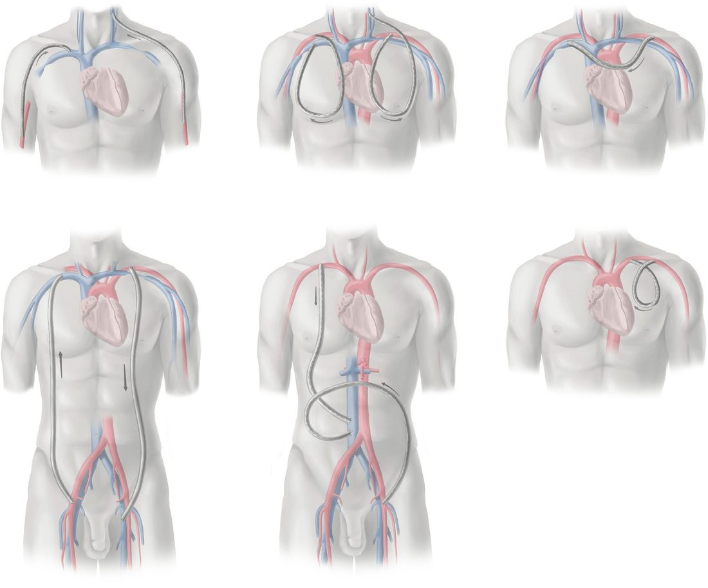

Dialysis Access
Summary
Dialysis access is planned surgery that is usually done too late. Patients who will receive haemodialysis should be referred to a vascular access surgeon at least 6 months before they are anticipated to start therapy, because that is the time needed for a fistula to mature, to undergo any maturation procedures it turns out to need, or for a second access to be created if the first fails [1]. This page covers the choice between fistula, graft and catheter, the vessel criteria that make a fistula possible, the configurations used, maturation assessment, and the long-term complications, stenosis and thrombosis, venous hypertension, aneurysm, infection and hand ischaemia. The old rule that a fistula is superior to a graft in nearly all circumstances no longer holds without qualification [1].
Definition
Vascular access options for haemodialysis are arteriovenous access (fistula or graft) and a tunnelled dialysis catheter [1].
Haemodialysis access-induced distal ischaemia (HAIDI) is hand ischaemia caused by the access itself; Society for Vascular Surgery guidelines classify it into four grades, from no symptoms in grade 0 to ischaemic rest pain and tissue loss in grade 3 [1].
An arteriovenous fistula is a communication between artery and vein; those for haemodialysis access are created surgically, as against the congenital and traumatic varieties [2].
Pathophysiology
Every arteriovenous communication has a structural and a physiological effect [2]. The structural effect of arterial blood flow on the veins is characteristic: they become dilated, tortuous and thick walled, arterialised [2]. The physiological effect, if the fistula is large, is an increase in cardiac output that may lead to cardiac failure [2].
Graft pseudoaneurysms have a specific mechanism. They arise from weakness in the graft wall caused by repeated needle cannulation, which heals with fibrous tissue replacing segments of the prosthesis with collagen, and collagen expands under pressure [1]. This is why most fistula aneurysms are true aneurysms, whereas all graft aneurysms are pseudoaneurysms [1].
Subclavian vein catheters cause a downstream problem. Catheter placement in the subclavian vein can lead to subclavian vein stenosis and subsequently compromise the function of ipsilateral arteriovenous access, which is why they should be used only if both internal jugular veins are occluded [1].
Clinical features
A superficial arteriovenous communication gives a pulsatile swelling, with a thrill on palpation and a continuous buzzing bruit (a machinery murmur) on auscultation; dilated veins may be visible, and pressure on the artery proximal to the fistula reduces the swelling and abolishes the thrill and bruit [2].
- Examination of a maturing fistula answers a specific question at each step.
- The entire tract should be palpated, and a thrill should be felt in the venous outflow portion of a mature fistula; absence of a thrill suggests inflow or anastomotic stenosis, whereas pulsatile outflow without a thrill indicates outflow stenosis [1].
- A mature fistula gives a continuous systolic and diastolic low-pitched bruit on auscultation [1].
The pattern of swelling localises a central venous stenosis. Swelling of the ipsilateral arm alone suggests subclavian vein stenosis; swelling of the ipsilateral arm and face suggests innominate vein stenosis; and swelling of both arms and the face indicates possible superior vena cava stenosis [1]. Prominent veins across the chest are another sign [1].
Fingertips should be inspected at every maturation visit for pallor, cyanosis or delayed capillary refill, which suggest access-induced distal ischaemia [1].
Access infection presents with pain, erythema, induration and drainage around the access site, with possible systemic features, fever, hypotension, bacteraemia and sepsis [1].
Etiology
Who does badly with a fistula is now reasonably well characterised. Female sex, coronary artery disease, diabetes and obesity all negatively affect fistula maturation and patency [1]. The elderly may be more appropriate for a graft, as they may have lower rates of fistula maturation, and patients with limited life expectancy will not live to receive the long-term benefits of a fistula [1].
- Two groups are poor candidates for any arteriovenous access.
- Those with a life expectancy under 9 months, and those with chronic hypotension or depressed cardiac output, in whom patency rates are low [1].
- A third group declines it: some patients find frequent cannulation and possible infiltration unacceptably painful and strongly prefer a catheter, a choice that should be respected by the kidney care team [1].
Risk factors for hand ischaemia are advanced age, female sex, diabetes, peripheral vascular disease, large outflow conduits, multiple prior access procedures, a prior episode of steal, and use of the brachial artery as inflow [1].
Graft infection risk is raised in identifiable patients: the immunocompromised, those with chronic infection, and those with previous vascular access infections, in whom a biologic rather than prosthetic conduit should be considered [1].
Diagnosis
- Arterial inflow is assessed before anything is created.
- Examine all upper extremity pulses and measure blood pressure in both arms; upper extremity arterial duplex of the brachial, radial and ulnar arteries is advisable to confirm normal inflow [1].
- The waveform in the intended inflow artery should be triphasic, blood pressure should be equal in both arms, and the artery should show no more than a moderate degree of calcification [1].
An intact palmar arch and adequate ulnar inflow, demonstrated by an Allen test, must be confirmed before creating access using radial artery inflow [1].
Central venous outflow is assessed by history first. Take a detailed inventory of any central venous devices present or past; dilated chest wall veins or arm swelling on examination suggest central venous stenosis or obstruction, and any suspicion of compromised outflow warrants CT venography or catheter-based venography [1].
For the arteriovenous communication itself, duplex scan and angiography confirm the lesion, which shows rapid venous filling [2].
Thresholds and severity
Vessel criteria for creating access [1]:
| Vessel | Minimum |
|---|---|
| Brachial artery | 3 mm diameter |
| Radial and ulnar arteries | 2 mm diameter |
| Vein for fistula | Convenient for puncture, reasonably straight, not deeper than 6 mm |
- Maturation criteria differ between the guideline and the recent evidence.
- KDOQI guidelines suggest that a 4-week maturity assessment should show a vein diameter of at least 4 to 5 mm with a minimum volume flow of 400 to 500 mL/min, though the studies behind these figures are largely underpowered and retrospective [1].
- A more recent study found the parameters most indicative of maturation to be a vein diameter of 6 mm or more, absence of stenosis in the vein, absence of stealing branches, and volume flow above 675 mL/min [1].
- Timing of cannulation depends on the conduit.
- A tunnelled catheter can be used immediately after placement [1].
- Standard grafts require 2 to 3 weeks of tissue ingrowth before cannulation to avoid extravasation at the access site; early cannulation grafts can be accessed within 24 hours of creation, which decreases catheter dwell time [1].
- Other graft materials can be accessed within 2 to 4 weeks, once incisions have healed and perigraft oedema has resolved [1].
The follow-up schedule after creation is fixed at three points. The first evaluation is about 2 weeks after the procedure, to assess the incision and identify thrombosis, pain, infection, numbness, swelling or distal ischaemia; the first assessment for maturity is at 4 to 6 weeks; and where intervention is needed it is generally recommended by 6 to 8 weeks [1].
KDOQI does not recommend routine surgical or endovascular intervention for postoperative maturation, the decision to intervene should be made case by case [1].
Treatment and Management
Choosing the access
The decision between fistula and graft must be individualised, taking into account demographics, comorbidities, patient and family preferences, and the patient's Life-Plan [1]. There is increasing evidence that a fistula may not have superior patency and function compared with a graft in all patients [1].
- Timing differs by conduit.
- For predialysis patients whose Life-Plan suggests a graft, creation should be as close to the start of dialysis as possible, because grafts carry a higher risk of infection and generally lower patency [1].
- For patients already dialysis dependent, a graft may be preferred in selected circumstances, being associated with earlier catheter removal and fewer catheter days [1].
The non-dominant arm is preferred, unless the anatomical requirements for durable access are not present there [1].
Tunnelled dialysis catheter
The right internal jugular vein is the preferred access, giving a straighter path to the superior vena cava and less kinking and thrombosis; the right femoral vein is preferred over the left, because the left iliac vein can be compressed by the right iliac artery [1]. Chest wall catheters are preferred to lower extremity catheters because of the lower infection risk [1]. Insertion should be under fluoroscopic guidance with ultrasound-guided venous access [1].
In the majority of patients a tunnelled catheter should be considered temporary, held while a functioning arteriovenous access is established; it carries significant longer-term complications (infection, catheter dysfunction and central venous stenosis) and should be a long-term option for only a minority [1].
Graft material
Expanded PTFE is the most commonly used, and no prosthetic graft type has been shown to have superior patency or lower complication rates [1]. Tapered grafts have not been shown to differ from conventional grafts in access-related hand ischaemia or patency, and heparin-bonded ePTFE has not been shown to improve patency [1].
Biologic conduits are for the infection-prone patient. Options are bovine carotid artery, bovine ureter, bovine mesenteric vein, cryopreserved human vein and cryopreserved human artery; bovine carotid artery is the most commonly used, allows earlier cannulation, and has superior primary and assisted primary patency with lower infection rates than PTFE [1].
Assisting maturation
Balloon-assisted maturation uses angioplasty of long venous segments to expedite and optimise maturation, and coil embolisation or ligation of competing branches can be done alongside it to increase flow across the preferred outflow tract [1].
The two commonest surgical interventions are proximal neoanastomosis (a new end-to-side anastomosis proximal to the stenotic region with the distal end ligated) and accessory vein ligation, which eliminates stealing branches and so increases flow through the main outflow vein [1].
Procedural interventions
Configurations
The standard arteriovenous configurations are the radiocephalic fistula, the brachiocephalic fistula, the upper arm brachiobasilic fistula, the forearm loop graft from brachial artery to cephalic vein, the upper arm straight graft from brachial artery to axillary vein, the upper arm loop graft from axillary artery to axillary vein, and the thigh loop graft from femoral artery to great saphenous vein [1].
Percutaneous fistula creation relies on a perforator vein connecting the deep and superficial venous systems in the antecubital fossa [1]. In a patient who is a candidate for a radiocephalic fistula, a percutaneous fistula should not be the first choice, because it creates an upper arm fistula and bypasses the distal-first principle [1]. Early results are promising, but secondary procedures are frequently needed to obtain functional maturity, and further study is required to define its role [1].
When the standard options are exhausted
Brachial artery to brachial vein fistula is technically challenging: the brachial vein is thin-walled and deep with numerous tributaries needing careful dissection and ligation, and the median nerve runs close to it and must be preserved [1]. Its maturation and patency are inferior to brachiocephalic and brachiobasilic fistulas, but it offers an autogenous alternative where superficial veins are inadequate, and may be preferable to a graft especially in young patients where preserving future access options matters [1].
Cervical-based grafts can be created where the axillary vein is occluded but central veins are patent, using ipsilateral internal jugular or subclavian vein for outflow; chest wall grafts need adequate axillary artery inflow and axillary or internal jugular vein outflow, and run either as a loop to the ipsilateral vein or as a necklace to the contralateral axillary vein [1].
The HeRO graft (a completely subcutaneous composite of prosthetic graft and catheter) is an option where central venous stenosis or occlusion cannot be treated but can be crossed endovascularly; the graft is anastomosed to arterial inflow in the arm, tunnelled subcutaneously, and connected to the central catheter at the deltopectoral groove, with 1-year primary patency of 22 to 48% and secondary patency about 60% [1].
Thigh access requires screening for peripheral arterial disease first. Placing a thigh access in a patient with significant peripheral arterial disease can produce ischaemic steal leading to limb-threatening ischaemia, gangrene and amputation [1].

Complications
Stenosis and thrombosis
- Stenosis is the most common complication after access creation, causing access dysfunction, inadequate dialysis clearance and thrombosis [1].
- For fistulas the common sites are the cannulation sites and the perianastomotic area; stenosis at the venous anastomosis is associated with thrombosis in 80% of grafts [1].
- Most stenoses and thromboses can now be treated endovascularly with percutaneous thrombectomy, balloon angioplasty and sometimes stenting, with open thrombectomy or revision reserved for percutaneous failure [1].
Aneurysm
Aneurysms can cause functional impairment and access thrombosis, loss of skin integrity, bleeding and rupture, and may raise cosmetic concerns [1]. Observation is acceptable for most stable fistula aneurysms; the indications for intervention are pseudoaneurysm, bleeding, pain, infection, skin ulceration, and large or multiple tortuous aneurysms [1]. Where intervention is needed, outflow stenosis should be evaluated and treated first [1].
- Covered stents work for grafts and not for fistulas.
- Graft pseudoaneurysms can be effectively excluded with covered stents, but true fistula aneurysms can continue to dilate after a covered stent is placed, making the stent ineffective [1].
- Surgical fistula salvage options are aneurysmorrhaphy, excision of redundancy with primary anastomosis, or graft interposition; selective ligation and excision may be appropriate in a patient with a functioning renal transplant [1].
Infection
Infection is the second leading cause of mortality in end-stage kidney disease, accounting for 8% of all deaths [1]. Reported graft infection rates range from 1.6% to 35% of patients, with a positive blood culture rate of 0.31 per 1000 days; the median rate of fistula infection is about 0.11 per 1000 days with a positive culture rate of 0.08 per 1000 days [1]. Skin organisms (Staphylococcus aureus and Staphylococcus epidermidis) account for 70 to 90% of access infections [1].
Management is broad-spectrum antibiotics and source control, with blood cultures taken before antibiotics start [1]. Preservation of the access may be possible if the infection involves only the overlying skin and does not extend to the access itself; in the majority of cases infection is treated surgically by partial or complete excision, or salvage with in situ or extra-anatomic reconstruction [1].
Hand ischaemia
Incidence ranges from under 1% in forearm fistulas to as high as 8% in antecubital-based fistulas [1]. After a graft, ischaemia commonly appears acutely within 30 days or subacutely within a year; after a fistula it is more likely once the access has been used for several years [1].
- Prevention is designed into the operation.
- Identify and treat proximal arterial lesions preoperatively; when creating antecubital-based fistulas, ligate the deep perforating branch so that only the cephalic or the basilic vein is arterialised rather than both; minimise use of the brachial artery as inflow, creating a distal forearm radiocephalic fistula where feasible, or using the proximal radial artery for inflow in upper arm fistulas [1].
- There is not currently enough evidence to support tapered grafts for reducing hand ischaemia [1].
The workup is photoplethysmography with and without fistula compression, plus duplex to measure volume flow and look for flow reversal in the artery distal to the anastomosis [1].
- Management is chosen by the flow in the fistula.
- High-flow fistulas, above 1 L of flow, are treated by banding or revision using distal inflow; low or normal flow access is treated by distal revascularisation interval ligation (DRIL) or proximalisation of arterial inflow [1].
- Radial artery ligation distal to the anastomosis can be considered for any radiocephalic fistula irrespective of flow, provided the palmar arch is intact [1]. In severe ischaemia, especially with digital gangrene, ligation of the access should be strongly considered [1].
Banding is least invasive and is considered first for high-flow access, but it has the highest failure rate at 33% and the highest rate of access thrombosis at 11% [1].
Venous hypertension
Swelling of the entire extremity after access creation indicates central venous stenosis or occlusion, frequently related to previous central venous catheters or devices [1]. The preferred treatment for central venous stenosis is endovascular balloon venoplasty, with a stent if significant recoil occurs, and some evidence that stent graft patency is superior to bare-metal stents [1]. Where there are no other access options and a central occlusion on the ipsilateral side, open options such as jugular venous turndown or bypass around the occlusion may be considered [1].
Outcomes
Early cannulation grafts have 12-month primary patency of 43 to 63% and secondary patency of 70 to 86%, and there is some evidence that they have inferior patency to standard grafts [1]. HeRO grafts achieve 1-year primary patency of 22 to 48% with secondary patency about 60% [1].
For basilic vein transposition, one-stage and two-stage approaches showed no significant difference in primary failure (15 to 45% versus 10 to 42%) though the two-stage approach may be preferred for smaller basilic veins, which is how several of the pooled studies used it [1].
Access complications are frequent and often lead to hospital admission [1], and infection is the second leading cause of death in this population [1]. Those two facts together are the argument for the 6-month referral interval at the top of this page.
References
- Sabiston Textbook of Surgery, 22nd ed., Ch. 107 Dialysis Access
- Bailey & Love's Short Practice of Surgery, 28th ed., Ch. 61 Arterial disorders